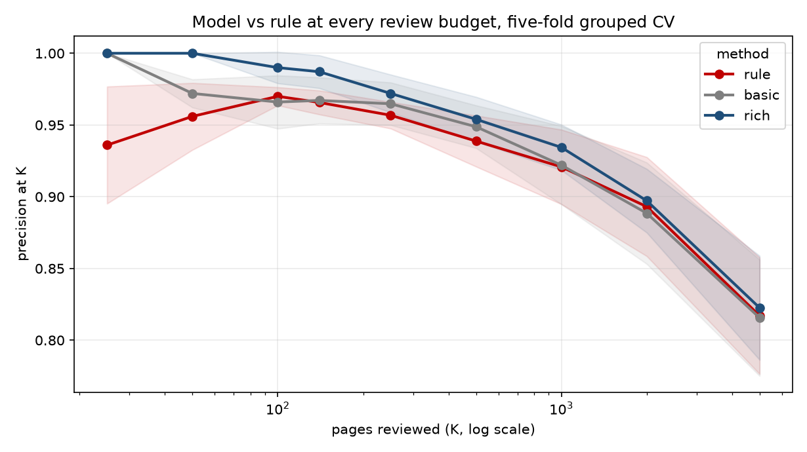
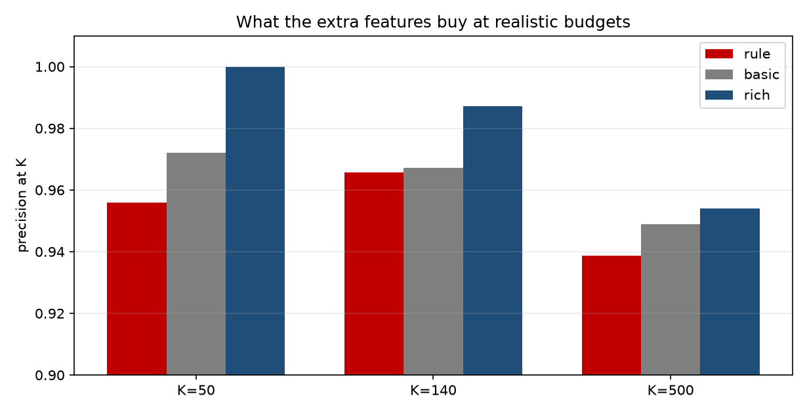
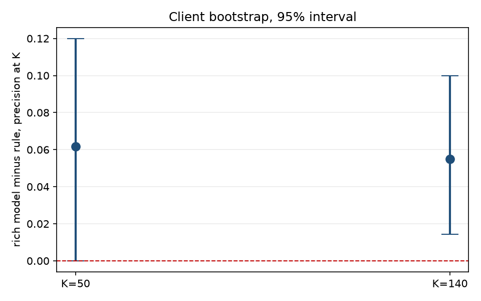

FlyRank ML Internship · Capstone Research Paper
A validated CTR opportunity model for content review, built on 9.8 million rows of production search data.
With a portfolio of hundreds of thousands of pages and a working budget of 140 reviews, the question is which pages come first. Using 9.8 million daily rows from the FlyRank warehouse, this study builds March 2026 page-months and labels April CTR against position-tier peers. A 25-feature gradient-boosted model is compared with a transparent CTR-gap rule on a five-fold client-grouped split, then tested on a later period. The model improves precision@140 by 5.5 points over the rule, with a bootstrap 95% interval of +1.4 to +10.0, and holds that edge at small and medium budgets on a time-forward test. The gain comes from prior-month trend and content metadata, while the rule stays better under a time-forward test when the budget is large.
FlyRank's content operation covers a large pseudonymized portfolio. The review team can open only a fraction of it each month. That makes the work a queue problem, not a prediction problem. We assume a team can look at roughly 140 pages over seven weeks. Every page it opens costs an editor's time, and every high-traffic page it skips keeps converting attention into clicks poorly. The question is which pages to open first.
The obvious rule is to sort by the lowest click-through rate. That rule fails in a measurable way. On a 30,000-page teaching slice, the 140 pages with the lowest CTR carried one click in total, because a page with zero clicks and a few thousand impressions always sorts first. A rule that weights the CTR gap by impressions captured about 21,300 clicks of expected gap with the same 140 slots. The two queues shared zero pages. The choice of rule is the decision.
This paper asks whether a learned model can improve on the best hand rule at that budget. It answers with a five-fold client-grouped split, a client bootstrap, a time-forward split, and a leakage audit. The answer is yes at realistic budgets, but the gain depends on features, not on model class, and it does not hold at every budget.
The data is the FlyRank internship warehouse, build v20260703, a pseudonymized star
schema hosted on Hugging Face. All identifiers are salted hashes. No client names, domains, URLs,
or raw queries appear in this paper, the notebooks, or the repository.
| Table | Grain | Use in this study |
|---|---|---|
fact_content_daily_performance | report date × client × content | Features and labels |
dim_content | one row per content item | Age, type, intent, depth, volume, links |
dim_clients | one row per client | Coverage context only |
Features come from March 2026 (2026-03-01 to 2026-03-31), with February 2026 as the prior month. The label comes from April 2026 (2026-04-01 to 2026-04-30). The decision moment is April 1. The replication uses January 2026 features, December 2025 as the prior month, and a February 2026 label. June 2026 is the sealed final month and was never used for development.
Three things are excluded on purpose. GA4 engagement columns are excluded because
ga4_data_available IS TRUE on only 4.21% of March rows, and requiring them would keep
the clients with the cleanest analytics rather than the pages that matter. The query table
fact_content_query_90d is excluded because its 90-day window overlaps both the feature
and label months. Client and content IDs are context only, never features.
One row is one content page for one client in one calendar month, a page-month. The March partition holds 9,841,378 daily rows and rolls up to 331,437 page-months. The labeled cohort is 58,477 page-months across 31 clients.
The base set has five page-level signals. The rich set has 25 and adds prior-month trend, content metadata, staleness, and categorical flags.
| Group | Features | Knowable on April 1 because |
|---|---|---|
| Base (5) | March CTR, weighted position, log impressions, position SD, content age | All measured during March |
| Prior month (5) | February CTR, February position, log impressions ratio, CTR change, position change | February is closed before April 1 |
| Content metadata (6) | log word count, has-word-count flag, log search volume, competition, log backlinks, days since update | Metadata is fixed before March |
| Categorical (6) | Content type and search intent one-hot flags | Assigned at creation |
| Flags (3) | Has prior month, has word count, has update date | Observed in the current snapshot |
The label is a ranking proxy, not a revenue number. low_ctr_next is 1 when a page's
April CTR falls below the March CTR median of its own March position tier, for pages with at least
100 April impressions. The thresholds use March data only, so the rule is fixed on April 1. The
label base rate is 0.572.
The baseline is a transparent value rule:
max(0, tier_median_ctr - page_ctr) * impressions / 100. It estimates the clicks a page
would gain over 90 days if it reached its tier median. It has no fitted weights. It is readable,
and an editor can disagree with it.
The comparison has three rungs. The rule has no fitted weights. The base model uses the five base features in a gradient-boosted classifier. The rich model uses all 25 features in the same model class, so the difference is the feature set, not the algorithm.
The primary design is five-fold grouped cross-validation by client. Pages from one client share templates and traffic patterns, so a random split would let the model learn the client instead of the pattern. A client bootstrap gives a 95% interval on the gap between the rich model and the rule. A time-forward split trains on January into February and tests on March into April. The whole design is repeated on the January period.
A label-derived column, April CTR, was added on purpose. It pushed AUC to 1.0000 and precision@140 to 1.0000, which is what a leak looks like. The column was removed and the honest number returned. The notebook also asserts that no April column enters the feature list, that no product flag is used, and that the one outcome-dependent population choice is disclosed: the 100-impression April floor drops 829 of 59,306 eligible pages (1.4%).
Same rows, same folds, same metric. Precision@K is the metric that matches a fixed review budget. Values are the mean over five client-grouped folds.
| Method | K=50 | K=140 | K=500 | K=5000 |
|---|---|---|---|---|
| Value rule | 0.956 | 0.966 | 0.939 | 0.817 |
| Base model, 5 features | 0.972 | 0.967 | 0.949 | 0.816 |
| Rich model, 25 features | 1.000 | 0.987 | 0.954 | 0.823 |
Table 1. Five-fold client-grouped CV, March into April. Base rate 0.572. Random precision@140 is 0.572.

Figure 1. The rich model is above the rule at every budget in-period. The gap is largest at small budgets, where a few slots decide the outcome.

Figure 2. The 5-feature model barely moves the rule. The 25-feature model adds 2 to 5 points at realistic budgets. The difference is the features, not the model class.
A client bootstrap on the out-of-fold predictions gives a 95% interval on the gap between the rich model and the rule. At K=140 the gap is +5.5 points, with an interval of +1.4 to +10.0, and 99.6% of resamples favor the model. At K=50 the gap is +6.2 points, with an interval of 0.0 to +12.0, so the small-budget result is directionally positive but touches zero.
Another way to read the same result: in a 140-page queue, the rule misses about five pages and the model misses about two. That is a 62% reduction in misses at the same review budget.

Figure 3. Client bootstrap, 1,000 resamples. The K=140 interval stays above zero. The K=50 interval touches zero, which is why the K=140 claim is the stronger one.
A model trained on January into February and tested on March into April is the deployment-like test. The base model falls below the rule at every budget. The rich model holds at small and medium budgets and falls behind at K=5000.
| Method | K=50 | K=140 | K=5000 |
|---|---|---|---|
| Value rule | 0.920 | 0.943 | 0.934 |
| Base model, 5 features | 0.880 | 0.914 | 0.888 |
| Rich model, 25 features | 0.980 | 0.971 | 0.912 |
Table 2. Time-forward split, full late frame. The rich model is ahead at small and medium budgets and behind at K=5000, where the rule's stability wins.
The model's top 140 contained two misses in the earlier five-feature audit. Both were top-3 pages with a March CTR near zero (0.018% to 0.035%) whose April CTR recovered to 0.345% and 0.679%. The model read a large gap and expected it to persist. The month was the anomaly.
The more interesting errors are false negatives. One deep page had 12,359 impressions and a 0.55% March CTR that fell to 0.000 in April. It ranked near the bottom. The label is tier-relative, so a page that was strong in absolute terms becomes a positive when it falls below a low tier median. That is a property of the label definition, not a model bug, and a zero April CTR can also be a tracking gap.
The decision depends on the budget. At 500 reviews or fewer, use the rich model. At thousands of reviews, use the rule, because its stability wins once the queue reaches deep pages. Both feed the same human-reviewed playbook.
| Archetype | Reason code | Action | Top 140 |
|---|---|---|---|
| Near-zero CTR at volume | VERIFY_FIRST | Check tracking and query mix before any edit | 4 |
| Aged snippet gap, 270+ days | CTR_GAP_AGED | Refresh the page, then rewrite the snippet | 36 |
| Prime snippet gap | CTR_GAP_PRIME | Rewrite the title and meta description | 100 |
Table 3. The 140-slot queue for March 2026, after excluding deep pages and requiring 500 impressions and 20 days of search data.
The top 140 carries about 11,700 clicks of expected gap, 12.1% of the in-scope gap. At an assumed 1.5 hours per review, that is about 210 editor-hours, or 84 clicks of gap per review. Extending to 500 reviews adds about 11,800 clicks for 360 more reviews, about 33 per review.
A one-page version of this section is in the decision memo.
Everything is in the public repository: github.com/8-BitRhyon/flyrank-ml-internship. The notebooks are executed and committed.
Seeds are fixed at 42 and row order is sorted before every split. The receipts are
excellence_metrics.json,
capstone_metrics.json,
and ml10_playbook_metrics.json.
To regenerate the key tables and figures, run work/scripts/excellence_analysis.py
with a Hugging Face read token in the environment as HF_TOKEN.
Built on the FlyRank ML Internship dataset: flyrank.ai. The warehouse is a pseudonymized, gated release. All identifiers in this work are hashed. No client names, domains, URLs, or private queries appear in this paper, its figures, or the repository.